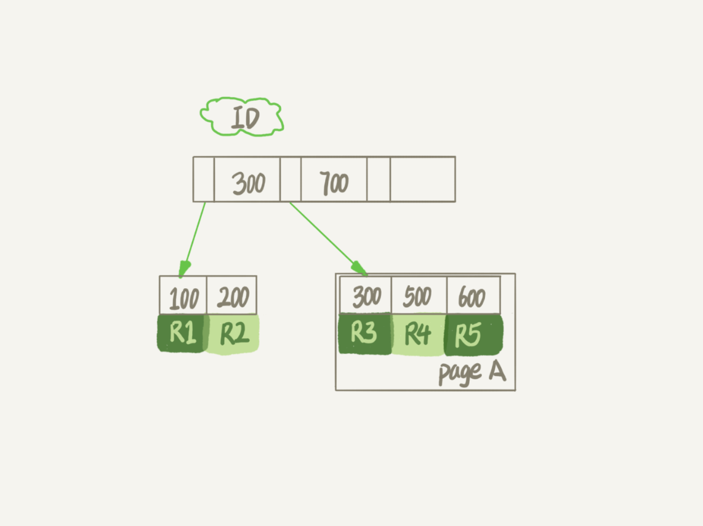
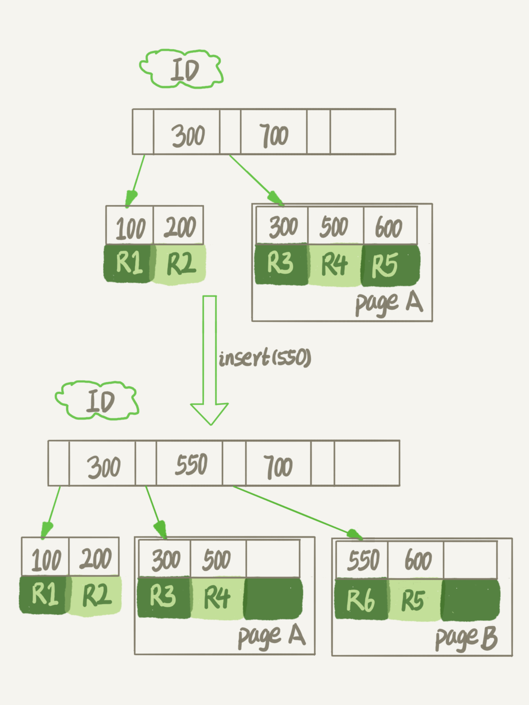

- 00 开篇词 这一次，让我们一起来搞懂MySQL.md.html
- 01 基础架构：一条SQL查询语句是如何执行的？.md.html
- 02 日志系统：一条SQL更新语句是如何执行的？.md.html
- 03 事务隔离：为什么你改了我还看不见？.md.html
- 04 深入浅出索引（上）.md.html
- 05 深入浅出索引（下）.md.html
- 06 全局锁和表锁 ：给表加个字段怎么有这么多阻碍？.md.html
- 07 行锁功过：怎么减少行锁对性能的影响？.md.html
- 08 事务到底是隔离的还是不隔离的？.md.html
- 09 普通索引和唯一索引，应该怎么选择？.md.html
- 10 MySQL为什么有时候会选错索引？.md.html
- 11 怎么给字符串字段加索引？.md.html
- 12 为什么我的MySQL会“抖”一下？.md.html
- 13 为什么表数据删掉一半，表文件大小不变？.md.html
- 14 count()这么慢，我该怎么办？.md.html
- 15 答疑文章（一）：日志和索引相关问题.md.html
- 16 “order by”是怎么工作的？.md.html
- 17 如何正确地显示随机消息？.md.html
- 18 为什么这些SQL语句逻辑相同，性能却差异巨大？.md.html
- 19 为什么我只查一行的语句，也执行这么慢？.md.html
- 20 幻读是什么，幻读有什么问题？.md.html
- 21 为什么我只改一行的语句，锁这么多？.md.html
- 22 MySQL有哪些“饮鸩止渴”提高性能的方法？.md.html
- 23 MySQL是怎么保证数据不丢的？.md.html
- 24 MySQL是怎么保证主备一致的？.md.html
- 25 MySQL是怎么保证高可用的？.md.html
- 26 备库为什么会延迟好几个小时？.md.html
- 27 主库出问题了，从库怎么办？.md.html
- 28 读写分离有哪些坑？.md.html
- 29 如何判断一个数据库是不是出问题了？.md.html
- 30 答疑文章（二）：用动态的观点看加锁.md.html
- 31 误删数据后除了跑路，还能怎么办？.md.html
- 32 为什么还有kill不掉的语句？.md.html
- 33 我查这么多数据，会不会把数据库内存打爆？.md.html
- 34 到底可不可以使用join？.md.html
- 35 join语句怎么优化？.md.html
- 36 为什么临时表可以重名？.md.html
- 37 什么时候会使用内部临时表？.md.html
- 38 都说InnoDB好，那还要不要使用Memory引擎？.md.html
- 39 自增主键为什么不是连续的？.md.html
- 40 insert语句的锁为什么这么多？.md.html
- 41 怎么最快地复制一张表？.md.html
- 42 grant之后要跟着flush privileges吗？.md.html
- 43 要不要使用分区表？.md.html
- 44 答疑文章（三）：说一说这些好问题.md.html
- 45 自增id用完怎么办？.md.html
- 我的MySQL心路历程.md.html
- 结束语 点线网面，一起构建MySQL知识网络.md.html
- 捐赠
13 为什么表数据删掉一半，表文件大小不变？
经常会有同学来问我，我的数据库占用空间太大，我把一个最大的表删掉了一半的数据，怎么表文件的大小还是没变？
那么今天，我就和你聊聊数据库表的空间回收，看看如何解决这个问题。
这里，我们还是针对 MySQL 中应用最广泛的 InnoDB 引擎展开讨论。一个 InnoDB 表包含两部分，即：表结构定义和数据。在 MySQL 8.0 版本以前，表结构是存在以.frm 为后缀的文件里。而 MySQL 8.0 版本，则已经允许把表结构定义放在系统数据表中了。因为表结构定义占用的空间很小，所以我们今天主要讨论的是表数据。
接下来，我会先和你说明为什么简单地删除表数据达不到表空间回收的效果，然后再和你介绍正确回收空间的方法。
参数 innodb_file_per_table
表数据既可以存在共享表空间里，也可以是单独的文件。这个行为是由参数 innodb_file_per_table 控制的：
- 这个参数设置为 OFF 表示的是，表的数据放在系统共享表空间，也就是跟数据字典放在一起；
- 这个参数设置为 ON 表示的是，每个 InnoDB 表数据存储在一个以 .ibd 为后缀的文件中。
从 MySQL 5.6.6 版本开始，它的默认值就是 ON 了。
我建议你不论使用 MySQL 的哪个版本，都将这个值设置为 ON。因为，一个表单独存储为一个文件更容易管理，而且在你不需要这个表的时候，通过 drop table 命令，系统就会直接删除这个文件。而如果是放在共享表空间中，即使表删掉了，空间也是不会回收的。
所以，将 innodb_file_per_table 设置为 ON，是推荐做法，我们接下来的讨论都是基于这个设置展开的。
我们在删除整个表的时候，可以使用 drop table 命令回收表空间。但是，我们遇到的更多的删除数据的场景是删除某些行，这时就遇到了我们文章开头的问题：表中的数据被删除了，但是表空间却没有被回收。
我们要彻底搞明白这个问题的话，就要从数据删除流程说起了。
数据删除流程
我们先再来看一下 InnoDB 中一个索引的示意图。在前面[第 4]和[第 5]篇文章中，我和你介绍索引时曾经提到过，InnoDB 里的数据都是用 B+ 树的结构组织的。

图 1 B+ 树索引示意图
假设，我们要删掉 R4 这个记录，InnoDB 引擎只会把 R4 这个记录标记为删除。如果之后要再插入一个 ID 在 300 和 600 之间的记录时，可能会复用这个位置。但是，磁盘文件的大小并不会缩小。
现在，你已经知道了 InnoDB 的数据是按页存储的，那么如果我们删掉了一个数据页上的所有记录，会怎么样？
答案是，整个数据页就可以被复用了。
但是，数据页的复用跟记录的复用是不同的。
记录的复用，只限于符合范围条件的数据。比如上面的这个例子，R4 这条记录被删除后，如果插入一个 ID 是 400 的行，可以直接复用这个空间。但如果插入的是一个 ID 是 800 的行，就不能复用这个位置了。
而当整个页从 B+ 树里面摘掉以后，可以复用到任何位置。以图 1 为例，如果将数据页 page A 上的所有记录删除以后，page A 会被标记为可复用。这时候如果要插入一条 ID=50 的记录需要使用新页的时候，page A 是可以被复用的。
如果相邻的两个数据页利用率都很小，系统就会把这两个页上的数据合到其中一个页上，另外一个数据页就被标记为可复用。
进一步地，如果我们用 delete 命令把整个表的数据删除呢？结果就是，所有的数据页都会被标记为可复用。但是磁盘上，文件不会变小。
你现在知道了，delete 命令其实只是把记录的位置，或者数据页标记为了“可复用”，但磁盘文件的大小是不会变的。也就是说，通过 delete 命令是不能回收表空间的。这些可以复用，而没有被使用的空间，看起来就像是“空洞”。
实际上，不止是删除数据会造成空洞，插入数据也会。
如果数据是按照索引递增顺序插入的，那么索引是紧凑的。但如果数据是随机插入的，就可能造成索引的数据页分裂。
假设图 1 中 page A 已经满了，这时我要再插入一行数据，会怎样呢？

图 2 插入数据导致页分裂
可以看到，由于 page A 满了，再插入一个 ID 是 550 的数据时，就不得不再申请一个新的页面 page B 来保存数据了。页分裂完成后，page A 的末尾就留下了空洞（注意：实际上，可能不止 1 个记录的位置是空洞）。
另外，更新索引上的值，可以理解为删除一个旧的值，再插入一个新值。不难理解，这也是会造成空洞的。
也就是说，经过大量增删改的表，都是可能是存在空洞的。所以，如果能够把这些空洞去掉，就能达到收缩表空间的目的。
而重建表，就可以达到这样的目的。
重建表
试想一下，如果你现在有一个表 A，需要做空间收缩，为了把表中存在的空洞去掉，你可以怎么做呢？
你可以新建一个与表 A 结构相同的表 B，然后按照主键 ID 递增的顺序，把数据一行一行地从表 A 里读出来再插入到表 B 中。
由于表 B 是新建的表，所以表 A 主键索引上的空洞，在表 B 中就都不存在了。显然地，表 B 的主键索引更紧凑，数据页的利用率也更高。如果我们把表 B 作为临时表，数据从表 A 导入表 B 的操作完成后，用表 B 替换 A，从效果上看，就起到了收缩表 A 空间的作用。
这里，你可以使用 alter table A engine=InnoDB 命令来重建表。在 MySQL 5.5 版本之前，这个命令的执行流程跟我们前面描述的差不多，区别只是这个临时表 B 不需要你自己创建，MySQL 会自动完成转存数据、交换表名、删除旧表的操作。

图 3 改锁表 DDL
显然，花时间最多的步骤是往临时表插入数据的过程，如果在这个过程中，有新的数据要写入到表 A 的话，就会造成数据丢失。因此，在整个 DDL 过程中，表 A 中不能有更新。也就是说，这个 DDL 不是 Online 的。
而在MySQL 5.6 版本开始引入的 Online DDL，对这个操作流程做了优化。
我给你简单描述一下引入了 Online DDL 之后，重建表的流程：
- 建立一个临时文件，扫描表 A 主键的所有数据页；
- 用数据页中表 A 的记录生成 B+ 树，存储到临时文件中；
- 生成临时文件的过程中，将所有对 A 的操作记录在一个日志文件（row log）中，对应的是图中 state2 的状态；
- 临时文件生成后，将日志文件中的操作应用到临时文件，得到一个逻辑数据上与表 A 相同的数据文件，对应的就是图中 state3 的状态；
- 用临时文件替换表 A 的数据文件。
图 4 Online DDL
可以看到，与图 3 过程的不同之处在于，由于日志文件记录和重放操作这个功能的存在，这个方案在重建表的过程中，允许对表 A 做增删改操作。这也就是 Online DDL 名字的来源。
我记得有同学在第 6 篇讲表锁的文章[《全局锁和表锁 ：给表加个字段怎么索这么多阻碍？》]的评论区留言说，DDL 之前是要拿 MDL 写锁的，这样还能叫 Online DDL 吗？
确实，图 4 的流程中，alter 语句在启动的时候需要获取 MDL 写锁，但是这个写锁在真正拷贝数据之前就退化成读锁了。
为什么要退化呢？为了实现 Online，MDL 读锁不会阻塞增删改操作。
那为什么不干脆直接解锁呢？为了保护自己，禁止其他线程对这个表同时做 DDL。
而对于一个大表来说，Online DDL 最耗时的过程就是拷贝数据到临时表的过程，这个步骤的执行期间可以接受增删改操作。所以，相对于整个 DDL 过程来说，锁的时间非常短。对业务来说，就可以认为是 Online 的。
需要补充说明的是，上述的这些重建方法都会扫描原表数据和构建临时文件。对于很大的表来说，这个操作是很消耗 IO 和 CPU 资源的。因此，如果是线上服务，你要很小心地控制操作时间。如果想要比较安全的操作的话，我推荐你使用 GitHub 开源的 gh-ost 来做。
Online 和 inplace
说到 Online，我还要再和你澄清一下它和另一个跟 DDL 有关的、容易混淆的概念 inplace 的区别。
你可能注意到了，在图 3 中，我们把表 A 中的数据导出来的存放位置叫作 tmp_table。这是一个临时表，是在 server 层创建的。
在图 4 中，根据表 A 重建出来的数据是放在“tmp_file”里的，这个临时文件是 InnoDB 在内部创建出来的。整个 DDL 过程都在 InnoDB 内部完成。对于 server 层来说，没有把数据挪动到临时表，是一个“原地”操作，这就是“inplace”名称的来源。
所以，我现在问你，如果你有一个 1TB 的表，现在磁盘间是 1.2TB，能不能做一个 inplace 的 DDL 呢？
答案是不能。因为，tmp_file 也是要占用临时空间的。
我们重建表的这个语句 alter table t engine=InnoDB，其实隐含的意思是：
alter table t engine=innodb,ALGORITHM=inplace;
跟 inplace 对应的就是拷贝表的方式了，用法是：
alter table t engine=innodb,ALGORITHM=copy;
当你使用 ALGORITHM=copy 的时候，表示的是强制拷贝表，对应的流程就是图 3 的操作过程。
但我这样说你可能会觉得，inplace 跟 Online 是不是就是一个意思？
其实不是的，只是在重建表这个逻辑中刚好是这样而已。
比如，如果我要给 InnoDB 表的一个字段加全文索引，写法是：
alter table t add FULLTEXT(field_name);
这个过程是 inplace 的，但会阻塞增删改操作，是非 Online 的。
如果说这两个逻辑之间的关系是什么的话，可以概括为：
- DDL 过程如果是 Online 的，就一定是 inplace 的；
- 反过来未必，也就是说 inplace 的 DDL，有可能不是 Online 的。截止到 MySQL 8.0，添加全文索引（FULLTEXT index）和空间索引 (SPATIAL index) 就属于这种情况。
最后，我们再延伸一下。
在第 10 篇文章[《MySQL 为什么有时候会选错索引》]的评论区中，有同学问到使用 optimize table、analyze table 和 alter table 这三种方式重建表的区别。这里，我顺便再简单和你解释一下。
- 从 MySQL 5.6 版本开始，alter table t engine = InnoDB（也就是 recreate）默认的就是上面图 4 的流程了；
- analyze table t 其实不是重建表，只是对表的索引信息做重新统计，没有修改数据，这个过程中加了 MDL 读锁；
- optimize table t 等于 recreate+analyze。
小结
今天这篇文章，我和你讨论了数据库中收缩表空间的方法。
现在你已经知道了，如果要收缩一个表，只是 delete 掉表里面不用的数据的话，表文件的大小是不会变的，你还要通过 alter table 命令重建表，才能达到表文件变小的目的。我跟你介绍了重建表的两种实现方式，Online DDL 的方式是可以考虑在业务低峰期使用的，而 MySQL 5.5 及之前的版本，这个命令是会阻塞 DML 的，这个你需要特别小心。
最后，又到了我们的课后问题时间。
假设现在有人碰到了一个“想要收缩表空间，结果适得其反”的情况，看上去是这样的：
- 一个表 t 文件大小为 1TB；
- 对这个表执行 alter table t engine=InnoDB；
- 发现执行完成后，空间不仅没变小，还稍微大了一点儿，比如变成了 1.01TB。
你觉得可能是什么原因呢 ？
你可以把你觉得可能的原因写在留言区里，我会在下一篇文章的末尾把大家描述的合理的原因都列出来，以后其他同学就不用掉到这样的坑里了。感谢你的收听，也欢迎你把这篇文章分享给更多的朋友一起阅读。
上期问题时间
在上期文章最后，我留给你的问题是，如果一个高配的机器，redo log 设置太小，会发生什么情况。
每次事务提交都要写 redo log，如果设置太小，很快就会被写满，也就是下面这个图的状态，这个“环”将很快被写满，write pos 一直追着 CP。

这时候系统不得不停止所有更新，去推进 checkpoint。
这时，你看到的现象就是磁盘压力很小，但是数据库出现间歇性的性能下跌。
© 2019 - 2023 Liangliang Lee. Powered by gin and hexo-theme-book.